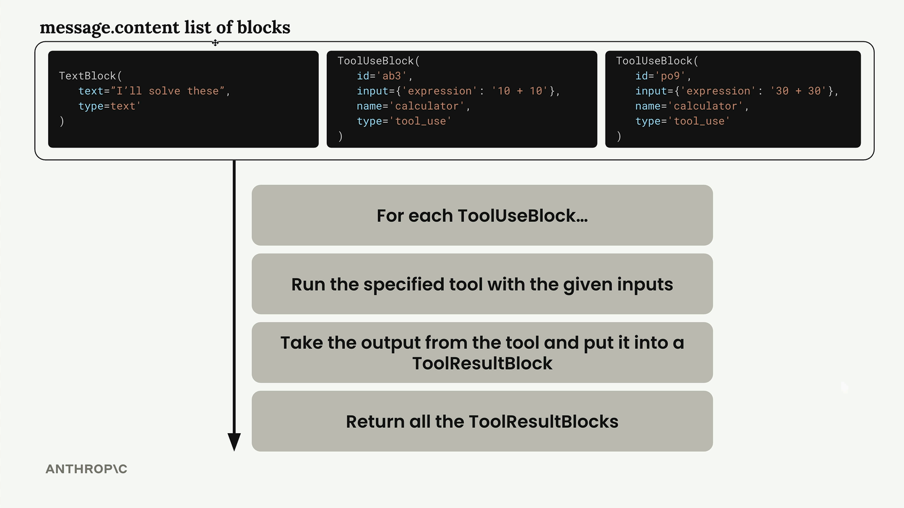
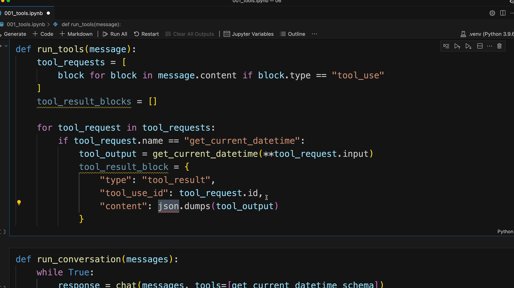

멀티턴 구현하기
도구를 사용하는 대화 시스템을 구축하려면, Claude가 도구 사용 요청을 멈출 때까지 계속 호출하는 루프를 구현해야 합니다. Claude가 더 이상 도구를 요청하지 않으면, 최종 응답이 준비되었다는 신호입니다.
도구 요청 감지
Claude가 도구를 사용하려는지 여부는 응답 메시지의 stop_reason 필드로 확인할 수 있습니다. Claude가 도구 호출이 필요하다고 판단하면 이 필드가 "tool_use"로 설정됩니다. 이를 통해 대화 루프를 계속할지 여부를 명확하게 판단할 수 있습니다:
if response.stop_reason != "tool_use":
break # Claude is done, no more tools needed대화 루프
주요 대화 함수는 다음과 같은 간단한 패턴을 따릅니다:
def run_conversation(messages):
while True:
response = chat(messages, tools=[get_current_datetime_schema])
add_assistant_message(messages, response)
print(text_from_message(response))
if response.stop_reason != "tool_use":
break
tool_results = run_tools(response)
add_user_message(messages, tool_results)
return messages이 루프는 Claude가 도구 요청 없이 최종 답변을 제공할 때까지 계속됩니다.
다중 도구 호출 처리
Claude는 단일 응답에서 여러 도구를 요청할 수 있습니다. 메시지 콘텐츠에는 블록 목록이 포함되며, 각 도구 사용 블록을 개별적으로 처리해야 합니다:

run_tools 함수는 도구 사용 블록을 필터링하고 각각을 처리하여 이를 담당합니다:
def run_tools(message):
tool_requests = [
block for block in message.content if block.type == "tool_use"
]
tool_result_blocks = []
for tool_request in tool_requests:
# Process each tool request...도구 결과 블록
각 도구 사용 블록에는 대응하는 도구 결과 블록으로 응답해야 합니다. 두 블록 간의 연결은 일치하는 ID를 통해 유지됩니다:

도구 결과 블록의 구조는 다음과 같습니다:
tool_result_block = {
"type": "tool_result",
"tool_use_id": tool_request.id,
"content": json.dumps(tool_output),
"is_error": False
}오류 처리
견고한 도구 실행을 위해서는 잠재적인 오류를 처리해야 합니다. 도구가 실패하더라도 Claude에 결과 블록을 제공해야 합니다:
try:
tool_output = run_tool(tool_request.name, tool_request.input)
tool_result_block = {
"type": "tool_result",
"tool_use_id": tool_request.id,
"content": json.dumps(tool_output),
"is_error": False
}
except Exception as e:
tool_result_block = {
"type": "tool_result",
"tool_use_id": tool_request.id,
"content": f"Error: {e}",
"is_error": True
}확장 가능한 도구 라우팅
여러 도구를 지원하려면, 도구 이름을 구현에 매핑하는 라우팅 함수를 만드세요:
def run_tool(tool_name, tool_input):
if tool_name == "get_current_datetime":
return get_current_datetime(**tool_input)
elif tool_name == "another_tool":
return another_tool(**tool_input)
# Add more tools as needed이 방식을 사용하면 핵심 대화 로직을 수정하지 않고도 새로운 도구를 쉽게 추가할 수 있습니다.
전체 워크플로
멀티턴 대화의 전체 흐름은 다음과 같습니다:
- 사용 가능한 도구와 함께 사용자 메시지를 Claude에 전송
- Claude가 텍스트 및/또는 도구 요청으로 응답
- 요청된 모든 도구를 실행하고 결과 블록 생성
- 도구 결과를 사용자 메시지로 다시 전송
- Claude가 최종 답변을 제공할 때까지 반복
이를 통해 Claude가 여러 턴에 걸쳐 여러 도구를 사용하여 복잡한 사용자 요청에 완전히 답변할 수 있는 원활한 경험을 제공합니다. 대화 기록은 전체 컨텍스트를 유지하여 Claude가 이전 도구 결과를 바탕으로 포괄적인 응답을 제공할 수 있도록 합니다.